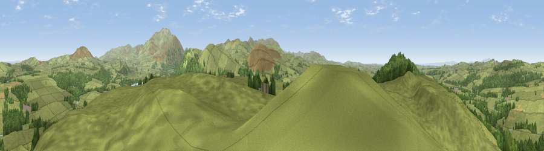

Viewpoint near Embleton
#4949 in England · top 38% of its area beats it · near Embleton · access?Where it is
The exact computed spot (NY 17475 31975). Click the marker for map links.
Public access: no public right of way or access land is recorded at this exact spot — it may be on private land. Computed from Natural England's CRoW access layer and OpenStreetMap rights of way — not the legal definitive map. Always verify locally.
The view, rendered

A 360° render of this exact spot computed from the terrain model, tree cover and land cover — summer colours, afternoon light, calibrated against photographs of famous viewpoints. Real trees, hedges and buildings will differ in detail.
The panorama
Grey silhouette: terrain skyline in each direction (720 bearings, Earth curvature and refraction included). Dashed green: skyline with trees (+15 m) and buildings (+8 m) as obstacles. Blue strip: how far the ground is visible on each bearing.
Where the view opens
Wedge length = distance to the farthest visible ground on that bearing (vegetation-aware). Rings at 10, 25 and 50 km.
What fills the view
83% grassland · 16% woodland ·
Angular shares of the visible panorama (visual magnitude), not map area. Landscape diversity 0.23 (0–1 Shannon).
Key numbers
More beautiful places nearby
The staircase of upgrades: each row has a higher view potential than everything closer. Driving times are estimates from straight-line distance, calibrated against real road routing — check an actual route before setting out.
| Place | Direction | Drive | Score |
|---|---|---|---|
| Watch Hill (Setmurthy Common) | W · 2 km | ~4 min | 77.4 |
| Viewpoint near Embleton | SE · 3 km | ~7 min | 81.8 |
| Viewpoint near Embleton | ESE · 3 km | ~8 min | 84.6 |
| Viewpoint near Thornthwaite | SE · 6 km | ~13 min | 85.5 |
| Ullock Pike | ESE · 8 km | ~15 min | 89.4 |
| Long Side | ESE · 8 km | ~16 min | 89.5 |
| Viewpoint near Finsthwaite | SSE · 48 km | ~69 min | 90.3 |
| The Knoll | S · 445 km | ~417 min | 91.0 |
54.67605, -3.28131 · source: screening · position refined by local search. Computed location — check access rights before visiting.